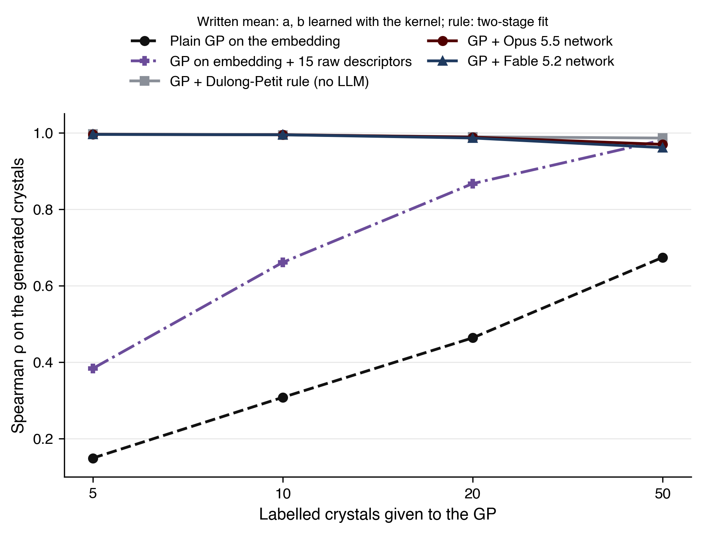

MATERIALS SCIENCE & ENGINEERING
TEXAS A&M UNIVERSITY
Department of Materials Science and Engineering
69

ρ at 5 / 10 / 20 / 50 labels
plain GP: 0.15 / 0.31 / 0.46 / 0.67
+ descriptors: 0.38 / 0.66 / 0.87 / 0.98
rule: 1.00 / 0.99 / 0.99 / 0.99
Opus: 1.00 / 0.99 / 0.99 / 0.97
Fable: 1.00 / 0.99 / 0.99 / 0.96